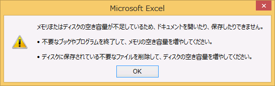

(※ 2017 年 4 月 17 日に Japan Office Support Blog に公開した情報のアーカイブです。)
こんにちは、Office サポートの西川 (直) です。
本記事では、Windows Firewall が無効化されていると Office の保護ビューが開けない現象について説明します。
現象
Office のドキュメントを開く際、以下のようなメッセージが表示され、保護ビューでドキュメントを開くことができません。

保護ビューについて
保護ビューとは、安全でない可能性があると判断されるファイルを開く際、コンピューターを保護するため、安全なプレビュー画面で開く機能です。
保護ビューで開く際には、以下のようなメッセージが表示されます。
保護ビューは、以下のような場合に有効になります。
- インターネットから取得したファイル
- インターネット一時フォルダなど、安全でない場所から開かれたファイル
- Outlook の添付ファイルとして取得したファイル (送信元が安全ではないと定義されている場合)
なお、マクロ入りファイルを開く際に、以下のような、マクロが無効にされましたというメッセージが表示される場合があります。
これは、マクロは無効化されていますがファイルの編集は可能で、保護ビューで開いている状態ではありません。
そのため、本記事でご紹介するエラーメッセージが表示されるシナリオには該当しません。
詳細は以下の資料をご参照ください。
保護ビューとは
https://support.office.com/ja-jp/article/d6f09ac7-e6b9-4495-8e43-2bbcdbcb6653
現象が発生する環境
Windows 8、8.1、Windows 10、または、Windows 2012 ベースの OS
かつ
Office 2013、Office 2016 、またはOffice 365 Proplus クライアントアプリケーション
※ Windows 7、Office 2010 では発生しません。
かつ
Windows Firewall サービスが動作していない場合
Windows Firewall サービスが動作している場合、コントロールパネル - “Windows ファイアウォール” の “Windows ファイアウォールの有効化または無効化” により Windows ファイアウォールを無効化しても、本現象は発生しません。
理由
Office 2013 以降では、Windows 8 で導入されたプロセス分離環境であるアプリケーション コンテナーを利用し、よりセキュリティが強化された保護ビューで動作するようになっています。
アプリケーション コンテナーではサンドボックス環境を構築する際に Windows Firewall サービスの機能を利用するため、Windows Firewall サービスが停止している状態では保護ビューの生成に失敗します。
回避策
Windows Firewall サービス を有効にしていただくことで、回避が可能です。
なお、有効化には、管理者権限が必要となります。
1) Windows キー + R キーを押下し、ファイル名を指定して実行ダイアログ ボックスを開きます。
2) “Services.msc” を入力し、し、[ OK] をクリックします。
3) [サービス] ウィンドウで、 “Windows Firewall” の状態が “実行中” となっているかを確認します。
4) “実行中”ではない場合、ダブルクリックを押下し、プロパティ画面を表示します。
5) スタートアップの種類を “自動” とし、“開始” をクリックします。
- コマンドプロンプトを使用する方法
1) コマンドプロンプトを管理者として起動します。
2) “sc start mpssvc” と入力します。
3) 実行し、上記の “Services.msc” で、Windows Firewall が実行されていることを確認します。
また、保護ビューとして開かれる理由の一つとして、インターネットゾーンから取得したファイルを開こうとしている状況があります。
もし、社内 Web サイトから取得したファイルについて、オープン時に保護ビューでファイルが開かれる場合、その Web サイトがインターネットゾーンとして扱われている可能性が考えられます。
この場合、お使いの環境、状況に応じて、以下の手順でブラウザの設定を変更し、その Web サイトをローカルイントラネットゾーンとして取り扱われるようにしていただくことで、保護ビューで開かれる動作そのものを抑制することが可能です。
1) IE を起動し、歯車のアイコンから、インターネットオプションを開きます。
2) セキュリティタブを開きます。
3) ローカルイントラネットで、”サイト” をクリックし、”イントラネットのネットワークを自動的に検出する” にチェックをつけます。
最後に、おすすめしませんが、保護ビューで開かないことで、このファイルが開けない問題を回避することも可能です。
<保護ビューの無効化>
1) Excel 等 Office アプリケーションを起動し、[ファイル]タブから “オプション” クリックします。
2) “セキュリティセンター” から “セキュリティセンターの設定” をクリックします。
3) “保護ビュー” から、環境の状況に応じて、チェックを外します。
4) OK をクリックし、設定を終了します。
<信頼できる場所の追加>
1) Excel 等 Office アプリケーションを起動し、[ファイル]タブから “オプション” クリックします。
2) “セキュリティセンター” から “セキュリティセンターの設定” をクリックします。
3) “信頼できる場所” から、“新しい場所の追加…” をクリックします。
4) 信頼できる場所として追加するフォルダのパスを追加します。例えば、以下のようなパスを追加します。
C:\Users\testuser\Documents\信頼済みフォルダ
5) OK をクリックし、設定を終了します。
6) 上で信頼できる場所として追加したフォルダに、保護ビューで開かれるファイルを移動します。
7) 信頼できる場所として追加したフォルダから、ファイルを開きます。
関連資料
Can’t preview Office documents in Outlook if Windows Firewall Service is disabled
https://support.microsoft.com/en-us/help/2912722
本情報の内容 (添付文書、リンク先などを含む) は、作成日時点でのものであり、予告なく変更される場合があります。